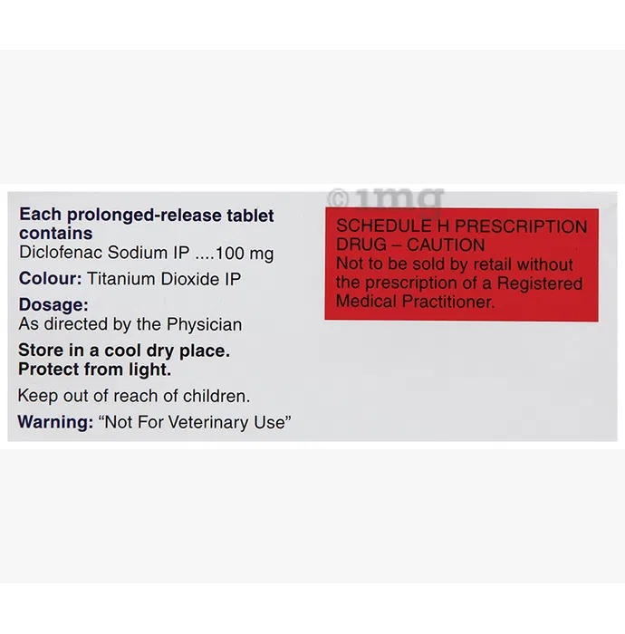

Product Introduction
Generic Name: Diclofenac 100 mg
Category: NSAID
Pharmacological Category: Cyclooxygenase Inhibitors
Therapeutic Indication: Pain relief
Storage: Keep REACTIN SR 100MG TABLET out of reach of children
Store: REACTIN SR 100MG TABLET below 25°C
Marketed by: Cipla Ltd
Country of Origin: India
MRP: ₹67.65
Reactin 100 SR Tablet belongs to a group of medicines called non-steroidal anti-inflammatory drugs (NSAIDs). It is used for short-term relief of pain, inflammation, and swelling in conditions that affect joints and muscles. It works by blocking chemical messengers in the brain that tell us we have pain. It can help relieve pain in conditions like rheumatoid arthritis and osteoarthritis.



<
>